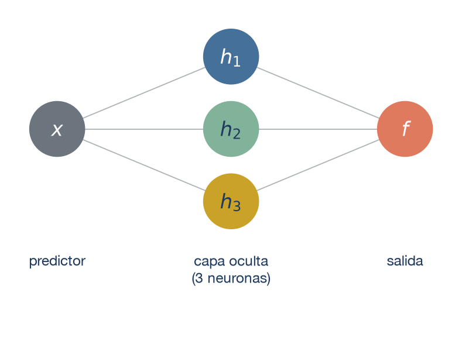
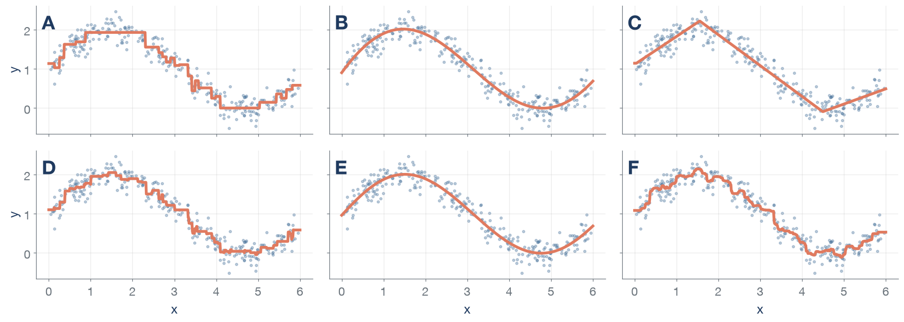
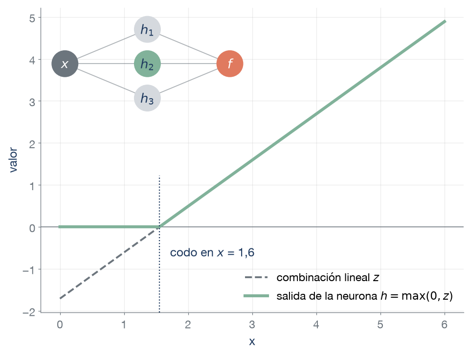
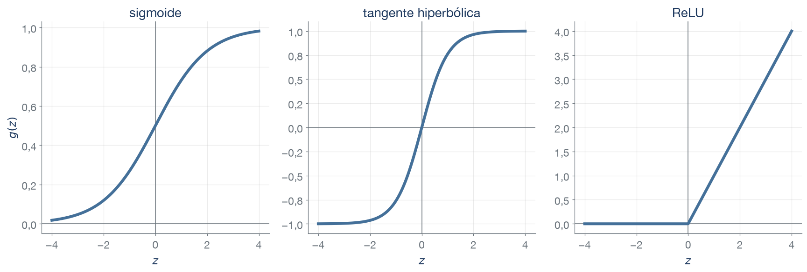
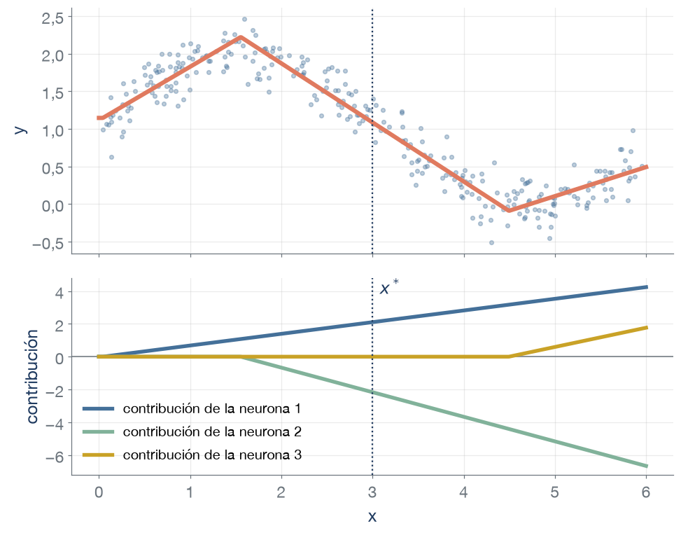
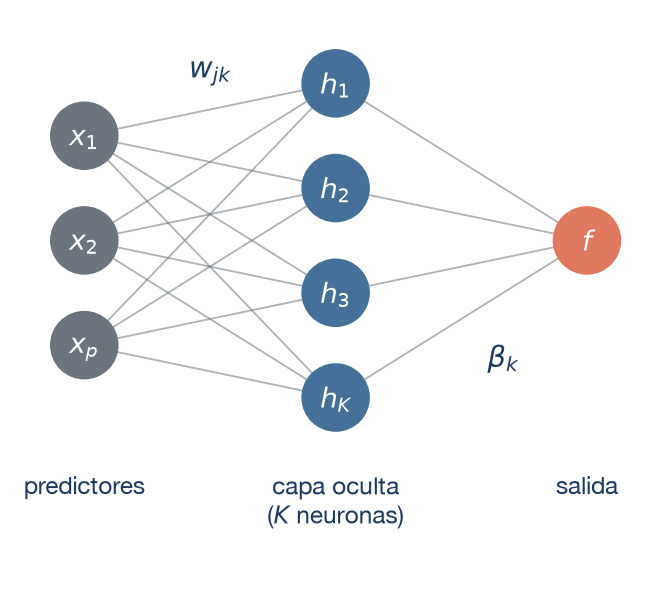
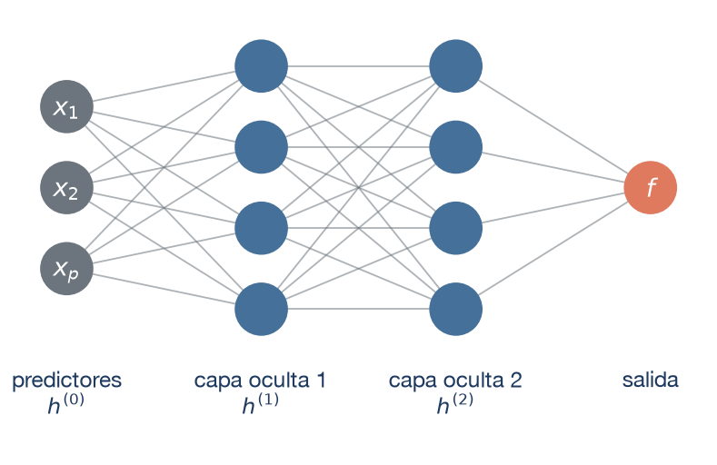
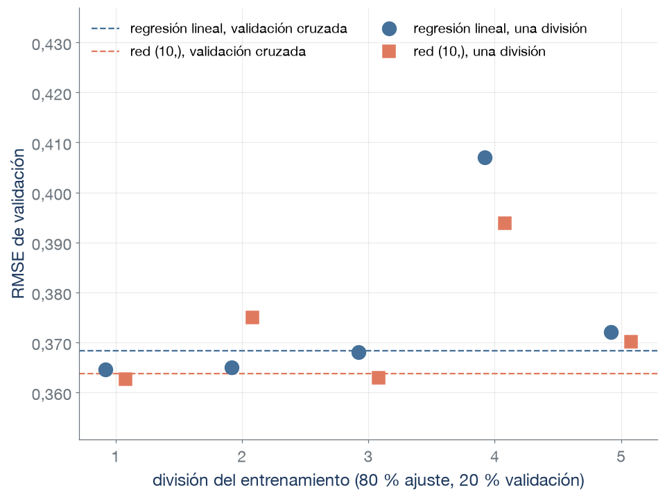
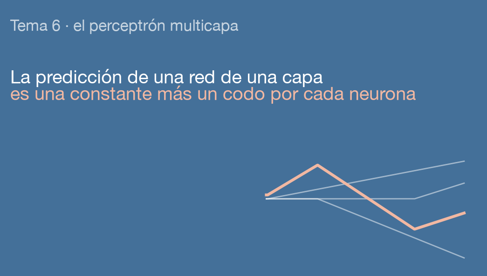

Tema 6. Redes neuronales: el perceptrón multicapa
Técnicas Avanzadas de Predicción en Negocios
Prof. Juan D. Montoro-Pons | 2026/27
¿Qué curvas son de la misma familia?

- Cinco curvas son de modelos ya conocidos: polinomio, árbol, random forest, XGBoost y SVR.
- ¿Qué curvas se parecen entre sí y qué familia de modelos las dibuja? ¿Cuál no encaja en ninguna?
- Familias. A, D y F, escalones de los modelos de árboles (árbol, XGBoost y random forest). B y E, curvas suaves (SVR y polinomio).
- C. Tramos rectos, con cambios de pendiente en \(x\) ≈ 1,6 y 4,5. La dibuja una red neuronal de 3 neuronas.
- Error. Las seis curvas tienen un RMSE de validación cruzada entre 0,20 y 0,22, y la red lo consigue con 10 pesos.
Datos simulados: \(y = 1 + \operatorname{sen}(x)\) más un ruido normal de desviación típica 0,2, con 300 valores de \(x\) entre 0 y 6. Cada curva se ajusta con las 300.
Tres preguntas
Una red neuronal construye variables nuevas, las neuronas, como combinaciones lineales de los predictores transformadas por una función no lineal, y predice con una combinación de esas variables. Sus pesos se estiman minimizando una pérdida.
- ¿Cómo construye una neurona una variable nueva? Combina los predictores como una regresión lineal y aplica al resultado una función que lo dobla.
- ¿Qué cambia en la capa de salida entre regresión y clasificación? La última capa aplica a las neuronas una regresión lineal, logística o multinomial, según el tipo de respuesta.
- ¿Qué aporta apilar capas de neuronas? Cada capa construye variables a partir de las de la capa anterior, lo que da más flexibilidad con menos neuronas y también más riesgo de sobreajuste.
¿Cómo construye una neurona una variable nueva?
Una red con una capa oculta
- Cada círculo del centro es una neurona: combina los predictores (aquí, uno) y aplica al resultado una función.
- Las neuronas forman la capa oculta, y la salida las combina.
- Con \(p\) predictores, cada neurona recibe los \(p\).
- Esta red es un perceptrón multicapa, un nombre que vale para una o más capas ocultas.
Una neurona dobla una combinación lineal

Notación
\(z = w_0 + \sum_{j=1}^{p} w_j x_j\) es la combinación lineal de los \(p\) predictores, con pesos \(w_j\) y término independiente \(w_0\). La neurona devuelve \(h = g(z)\), con \(g\) la función de activación.
- ReLU: \(g(z) = \max(0, z)\). Vale cero hasta un punto y crece en línea recta desde él.
- En el ejemplo, con un solo predictor, la neurona vale cero a la izquierda de \(x\) = 1,6 y crece en línea recta a la derecha.
Tres funciones de activación

Sigmoide \(1/(1+e^{-z})\), entre 0 y 1. Tangente hiperbólica \(\tanh(z)\), entre −1 y 1. ReLU \(\max(0, z)\), cero para \(z < 0\).
La predicción es una suma de codos

\[f(x) = \beta_0 + \sum_{k=1}^{K} \beta_k\, h_k(x)\]
- \(h_k(x)\) es la salida de la neurona \(k\) (de \(K\)), \(\beta_k\) su peso en la salida y \(\beta_0\) la constante.
- Cada neurona ReLU aporta una línea con un codo, cero a un lado y recta al otro, multiplicada por \(\beta_k\).
- Los pesos de las dos capas se estiman juntos, minimizando la pérdida (en regresión, el error cuadrático medio).
Lectura en \(x^*\) = 3: la constante 1,15 más las contribuciones 2,11, −2,17 y 0,00 da 1,09.
Entrena una red de una capa
¿Cuántos pesos tiene una red?

\[\underbrace{(p + 1)\,K}_{\text{capa oculta}} \;+\; \underbrace{K + 1}_{\text{salida}}\]
- Cada una de las \(K\) neuronas tiene un peso \(w_{jk}\) por predictor y un término independiente. La salida tiene un peso \(\beta_k\) por neurona y una constante.
- Con 46 columnas de los anuncios y 50 neuronas, 2401 pesos. La regresión lineal tiene 47.
Una red con 4 predictores, una capa oculta de 5 neuronas y una salida. ¿Cuántos pesos tiene?
- Capa oculta: 4 · 5 + 5 = 25, con un término independiente por neurona.
- Salida: 5 + 1 = 6. En total, 31.
¿Qué cambia en la capa de salida entre regresión y clasificación?
La capa de salida según el problema
| Problema | Activación de salida | Pérdida | Sin capa oculta, equivale a |
|---|---|---|---|
| Regresión | Identidad | Error cuadrático | Regresión lineal |
| Dos clases | Sigmoide | Log-loss | Regresión logística |
| Más de dos clases | Softmax, una neurona por clase | Log-loss | Regresión multinomial |
\[p_c = \frac{e^{z_c}}{\sum_{m=1}^{C} e^{z_m}}\]
- Softmax: \(z_c\) es la combinación lineal de las neuronas para la clase \(c\), y \(C\) el número de clases.
Con tres franjas de precio, la salida tiene tres neuronas. ¿Qué tienen que cumplir sus valores?
- Son probabilidades: cada valor entre 0 y 1, y los tres suman 1.
- Softmax lo garantiza con cualquier valor de las \(z_c\).
Superanfitrión: redes de una capa frente a la logística
| Modelo | Exactitud | AUC-ROC | Log-loss |
|---|---|---|---|
| Clasificador nulo | 0,695 | 0,500 | 0,615 |
| Regresión logística | 0,774 | 0,805 | 0,490 |
| Red de una capa (1 neurona) | 0,773 | 0,803 | 0,490 |
| Red de una capa (10 neuronas) | 0,811 | 0,853 | 0,434 |
Validación cruzada estratificada, media de 5 particiones de los 5136 anuncios de entrenamiento con dato de superanfitrión (30 % superanfitriones). Redes de Keras con una capa oculta de 1 o de 10 neuronas ReLU, salida softmax y 100 épocas.
La red de una sola neurona da casi las mismas cifras que la regresión logística. ¿Por qué?
- Con una neurona, la red construye una sola variable, una combinación lineal de los predictores recortada en cero, y la capa de salida le aplica una regresión logística.
- Es una logística con una zona en la que todos los anuncios reciben la misma probabilidad, y apenas puede hacer más que ella.
- Con 10 neuronas construye 10 variables, y en esta comparación mejora las tres métricas.
¿Qué aporta apilar capas de neuronas?
Una red profunda encadena capas

\[h^{(l)} = g\big(W^{(l)}\, h^{(l-1)} + w_0^{(l)}\big)\]
Notación
\(h^{(0)} = x\), los predictores. \(W^{(l)}\) reúne los pesos de la capa \(l\), \(w_0^{(l)}\) sus términos independientes, y \(g\) se aplica a cada neurona.
- Cada neurona recibe todas las salidas de la capa anterior (capas densas), y la información va de la entrada a la salida, sin ciclos (feed-forward).
- Con más de una capa oculta, la red es profunda.
Una capa basta en teoría
Aproximador universal
Una red con una sola capa oculta, una activación no lineal como la ReLU y suficientes neuronas puede aproximar tanto como se quiera cualquier función continua en una región cerrada y acotada.
- El teorema no dice cuántas neuronas hacen falta para aproximar con un error dado ni cómo encontrar sus pesos con los datos disponibles.
Con un predictor y una sola capa de 20 neuronas ReLU, ¿cuántos tramos puede tener la curva como mucho? ¿Bastan para reproducir una curva de 1024 tramos?
- Como mucho 21, porque cada neurona aporta un codo.
- Para reproducir exactamente una curva de 1024 tramos harían falta al menos 1023 neuronas en una sola capa.
La profundidad multiplica los tramos
![Diagrama de una red con una entrada u, tres capas ocultas de dos neuronas y una salida, unidas por flechas. Dentro de cada neurona, su salida al variar u entre 0 y 1: en la primera capa, dos rampas con un codo; en las capas siguientes, rampas repetidas. Debajo de cada capa, en un recuadro de trazo discontinuo, la combinación de sus dos neuronas que recibe la capa siguiente: un triángulo (2 tramos), dos triángulos (4 tramos) y cuatro triángulos (8 tramos). La salida, a la derecha, es la combinación de la tercera capa, con 8 tramos.](06_mlp_files/figure-revealjs/cell-11-output-1.png)
Ejemplo construido con pesos fijados. Cada curva es el valor de la neurona, o de la combinación, al variar la entrada \(u\) entre 0 y 1.
Con 10 capas de dos neuronas, 1024 tramos con 20 neuronas y 61 pesos. En una sola capa harían falta al menos 1023 neuronas.
Escalar los predictores
| Red de una capa con 50 neuronas (todas las columnas) | RMSE |
|---|---|
Predictores estandarizados (StandardScaler) |
0,363 |
| Predictores en sus unidades | 0,518 |
| Modelo nulo (media) | 0,533 |
RMSE de validación cruzada de log(precio), media de 5 particiones del entrenamiento. Redes de Keras con 100 épocas, minilotes de 32 y la tasa de aprendizaje por defecto.
- Los pesos se estiman por descenso del gradiente, y con columnas de escalas muy distintas el descenso avanza mal.
- En el ejemplo de los anuncios, sin estandarizar, la red apenas mejora al modelo nulo en 100 épocas.
- La estandarización va dentro del
Pipeline, antes de la red.
Más pesos bajan la log-loss de entrenamiento
![Log-loss del superanfitrión frente al número de pesos de nueve redes, en escala logarítmica. En gris, la de entrenamiento, que baja al crecer la red, con trazo continuo para las redes de una capa y discontinuo para las de dos. En naranja, la de validación cruzada. La de las redes de una capa tiene su mínimo en la red de 10 neuronas, señalada con un círculo, por debajo de la línea punteada azul de la regresión logística, y sube después. La de las redes de dos capas sube mucho más, y su última red queda fuera del eje, con el valor rotulado.](06_mlp_files/figure-revealjs/cell-12-output-1.png)
- Las probabilidades se usarán tal cual, para calcular un coste esperado.
- Según la log-loss de validación, ¿qué red se elegiría? ¿Qué pasa con las de dos capas?
- La (10,), con 0,434 frente a 0,490 de la regresión logística.
- En esta comparación, con 100 épocas, a partir de 10 neuronas por capa la red de dos capas da peor log-loss de validación que la de una: (10, 10) 0,458 frente a 0,434, y (50, 50) 0,895 frente a 0,479. Con 3 neuronas por capa pasa al revés (0,440 frente a 0,448).
Superanfitrión, media de 5 particiones estratificadas del entrenamiento. (10,) es una capa oculta de 10 neuronas, y (10, 10), dos capas de 10. Redes de Keras con ReLU, salida softmax, Adam con la tasa por defecto, 100 épocas y minilotes de 32.
Hiperparámetros de una red en Keras
keras.Sequential con capas keras.layers.Dense:
| Hiperparámetro | Dónde se fija | Qué controla |
|---|---|---|
| Neuronas de cada capa | units de cada Dense, una por capa oculta |
Ancho y profundidad de la red |
| Activación | activation de cada Dense |
Forma de cada neurona |
| Capa de salida y pérdida | La última Dense y loss de compile |
Tipo de respuesta |
| Optimizador y tasa de aprendizaje \(\eta\) | optimizer y learning_rate |
Tamaño de cada paso del gradiente |
| Épocas | epochs de fit |
Pasadas por el conjunto de entrenamiento |
| Tamaño del minilote | batch_size de fit |
Observaciones en cada paso |
Valores por defecto: activation=None (identidad), learning_rate=0,001 (Adam), epochs=1, batch_size=None (32).
- Keras funciona sobre TensorFlow, JAX o PyTorch. scikit-learn tiene redes densas en
MLPRegressoryMLPClassifier.
Validar una red de Keras

- Keras valida con una sola división del entrenamiento (
validation_split). - En el ejemplo, el RMSE de la regresión lineal cambia hasta 0,042 de una división a otra, y por validación cruzada los dos modelos se separan 0,004.
- La validación cruzada con el envoltorio de scikit-learn ajusta cada red 5 veces, unos 6 s por ajuste (la regresión lineal, 0,01 s).
Recapitulación: tres respuestas
- ¿Cómo construye una neurona una variable nueva? Calcula una combinación lineal de los predictores y le aplica una función de activación no lineal, que con ReLU deja un codo.
- ¿Qué cambia en la capa de salida entre regresión y clasificación? La activación y la pérdida de la última capa, que aplican a las neuronas una regresión lineal, logística o multinomial.
- ¿Qué aporta apilar capas de neuronas? Variables construidas a partir de otras variables, que permiten formas complejas con pocas neuronas y obligan a vigilar el error de validación.
Actividad final
Se necesita un modelo que proponga precios anunciados para alojamientos comparables. En parejas (3 min): ¿se propondría una red neuronal? Dar un argumento con la tabla y otro sobre cómo ajusta una red.
| Modelo | RMSE | MAE | R² | Segundos por ajuste |
|---|---|---|---|---|
| Modelo nulo (media) | 0,533 | 0,419 | 0,000 | 0,01 |
| Regresión lineal | 0,368 | 0,276 | 0,522 | 0,01 |
| Red (3,), 100 épocas | 0,359 | 0,269 | 0,545 | 5,48 |
| Red (200, 200), 100 épocas | 0,433 | 0,321 | 0,337 | 8,75 |
| SVR con núcleo RBF (\(C\) = 1, \(\gamma\) = 0,1) | 0,334 | 0,246 | 0,605 | 0,39 |
| Random forest (500 árboles) | 0,314 | 0,233 | 0,652 | 3,14 |
| XGBoost (2000 árboles) | 0,314 | 0,233 | 0,652 | 0,92 |
Métricas de validación cruzada de log(precio), media de 5 particiones del entrenamiento. Las dos redes son la mejor y la mayor de seis arquitecturas de regresión de una y dos capas, validadas como las del superanfitrión. El RMSE (errores relativos, con más peso a los grandes) es la métrica con la que se comparan los modelos. Segundos por ajuste con un núcleo de CPU.
En las redes (3,) y (200, 200), el RMSE de entrenamiento es 0,352 y 0,233 (media de las 5 particiones).
- Con la tabla: la mejor red (0,359) mejora poco a la regresión lineal (0,368) y queda por encima de la SVR, del random forest y de XGBoost (0,314).
- Con el mecanismo: la red más grande sobreajusta (0,233 en entrenamiento y 0,433 en validación, frente a 0,352 y 0,359 de la (3,)), y elegir el tamaño exige validar muchas redes, cada una con varios ajustes de segundos.
Glosario (1/2): neuronas y capas
| Concepto | Significado | Keras |
|---|---|---|
| Neurona | Variable que calcula una combinación lineal de sus entradas, \(z = w_0 + \sum_j w_j x_j\), y le aplica una función de activación | Cada unidad de Dense |
| Peso y término independiente (sesgo) | Coeficientes \(w_j\) de la combinación lineal y su constante \(w_0\). Se estiman al ajustar | kernel, bias |
| Función de activación | Función no lineal \(g\) que transforma \(z\): sigmoide, tangente hiperbólica, ReLU | activation |
| ReLU | \(\max(0, z)\): cero hasta un punto y recta desde él | activation="relu" |
| Activación signo | \(+1\) o \(-1\) según el signo de \(z\). La del perceptrón original, que no se puede ajustar por descenso del gradiente | — |
| Capa oculta | Conjunto de neuronas entre los predictores y la salida | Dense(units) |
| Capa de salida | Última capa: identidad (regresión), sigmoide (dos clases) o softmax (más de dos), con su pérdida | Última Dense, loss |
| Softmax | Convierte \(C\) combinaciones lineales en probabilidades positivas que suman 1 | activation="softmax" |
Glosario (2/2): redes profundas y ajuste
| Concepto | Significado | Keras |
|---|---|---|
| Perceptrón multicapa | Red con una o más capas ocultas densas (cada neurona recibe todas las salidas de la capa anterior) y sin ciclos (feed-forward). Profunda si tiene más de una capa oculta | Sequential con Dense (en scikit-learn, MLPRegressor y MLPClassifier) |
| Aproximador universal | Una red con una capa oculta, una activación no lineal y suficientes neuronas aproxima cualquier función continua en una región cerrada y acotada | — |
| Época | Una pasada completa por el conjunto de entrenamiento | epochs |
| Minilote | Observaciones que se usan en cada paso del gradiente | batch_size |
| Tasa de aprendizaje \(\eta\) | Tamaño de cada paso del gradiente | learning_rate |
| Envoltorio de scikit-learn | Clase que permite usar una red de Keras en un Pipeline y en cross_validate |
keras.wrappers.SKLearnRegressor, SKLearnClassifier |
| Red recurrente | Red para secuencias (series temporales, texto): cada paso recibe también el estado del paso anterior | SimpleRNN, LSTM |
| Red convolucional | Red con capas que aplican el mismo filtro a zonas vecinas de la entrada (imágenes, sonido) | Conv2D |
| Bibliotecas | Keras funciona sobre TensorFlow, JAX o PyTorch. PyTorch es la más usada en investigación | — |
